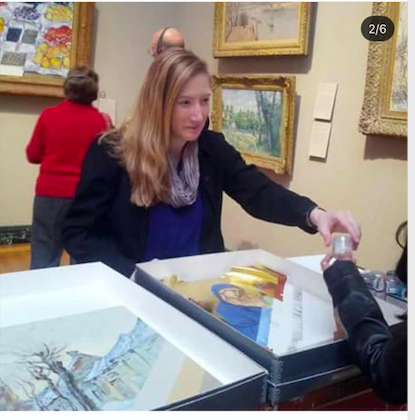

Tori's Portfolio
WelcomeWelcome to my first page!
I am Tori Reimann and learning to code.
Here are some projects I have tried and my contact info: vmoran26@gmail.com. I have been a teacher in all age classrooms and at art museums.
Recently, I have worked for many years in quality assurance at tech companies.
Projects
Eyes
Ball
PacMen

Contact
vmoran26@gmail.com, linkedin.com, tareim.github.io